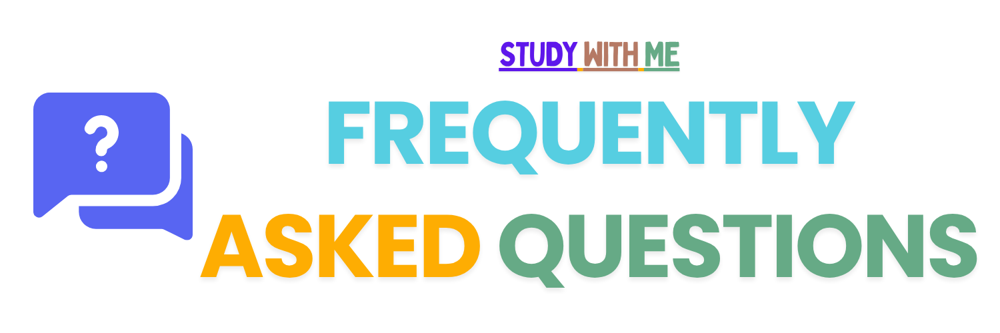
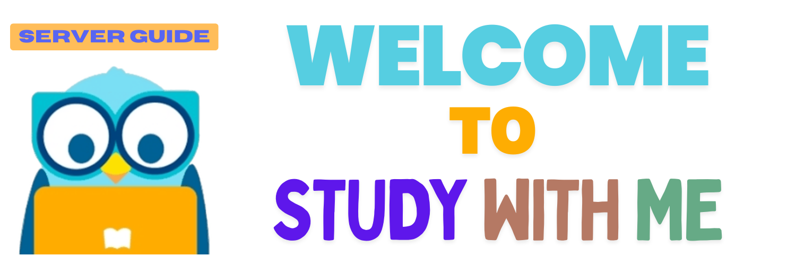
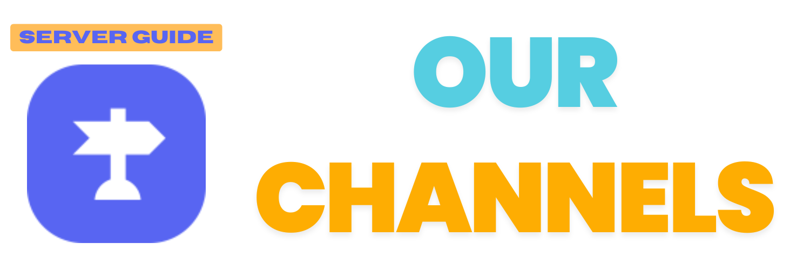
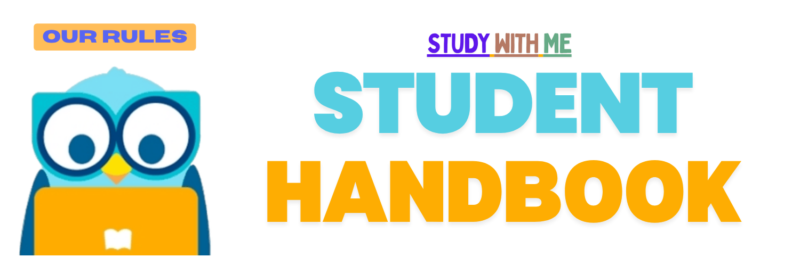

40,000+
members worldwide building better study habits together
StudyWithMe is a 24/7 online community where students & professionals study and work together for focus, support, motivation and accountability. Established in 2020, it is a professional, welcoming Discord space built for students who want accountability, and productivity. From verified access and accountability groups, shared libraries, and recognition systems, SWM is designed to make staying consistent feel easier.

The server combines structure, safety, personality, and practical student tools. This first website version highlights the full ecosystem while leaving plenty of room for more guides and references to grow over time.
A large international student network means active study energy across different schedules, goals, and time zones.
Entry is guided through verification so the community stays safer, more intentional, and easier to trust.
SWM keeps the atmosphere warm and expressive with server personality built right into conversations.
Dedicated spaces for Forest, YPT, and similar study apps make accountability easier to maintain.
Plantwithme, studywithme, and Strix support community routines, verification, and member management inside SWM.
Subject-based spaces are planned to help members find more relevant discussions, support, and study partners.
Academic and leisure reading collections give members a place to explore both coursework and personal reading.
Weekly and monthly leaderboards, class-based halls, and voting perks celebrate consistency and contribution.
These cards make it easier for members to find the information they need quickly, from starting out in the server to understanding expectations and finding the right spaces.

Expandable answers for the questions members ask most about verification, studying, safety, apps, and participation.

A clearer path for new members, from joining and verification to picking the right channels and routines.

A visual map of community spaces, accountability rooms, resource zones, support areas, and course-specific expansions.

Rules, behavioral expectations, and moderation boundaries presented in a cleaner format than a plain text document.
These answers cover the most common starting points for new and returning members.
This section gives new members a quick understanding of how to enter the server, get verified, locate useful spaces, and build a study flow.
Start with the invite and land in a guided entry space that introduces the community tone and next steps.
Strix verification keeps SWM safer and more focused, while the 48-hour rule prevents abandoned access.
Once verified, members can head into study rooms, app groups, the library, or social support spaces.
The goal is not just to join, but to stay consistent through systems, recognition, and repeatable study habits.
Instead of listing every single channel right now, this first version groups the server into practical categories. That keeps the site clean now and makes it easy to expand into a searchable course-channel directory later.
The rooms members return to most often for studying, accountability, and consistency.
Academic and leisure reading zones give members access to both useful materials and enjoyable reading.
SWM is more than productivity. It also rewards and celebrates the people who help keep the space active.
This section frames the handbook as polished website content rather than a long wall of text, making the rules easier to scan and understand.
Members should help protect a calm, supportive environment where people can focus without harassment, hostility, or disruption.
Verification, account safety, and honest participation help keep SWM trustworthy and useful.
Resources, channel use, and public participation should make the server better for everyone, not noisier or harder to manage.
This section turns your recognition systems into a strong feature of the site instead of leaving them buried in server text. It also sets up space for future dynamic leaderboards if you ever want live data.
A recurring spotlight for members who show up consistently and keep their study momentum visible.
Longer-form recognition for members whose effort, presence, and contribution shape the server culture.
Recognition can also lead to community privileges, giving active members a more meaningful role in server life.
SWM started in 2020 and has grown into a large worldwide student server that still feels guided and intentional. The goal is not simply to host a Discord server, but to create a study environment people can actually rely on.
StudyWithMe welcomes students, professionals, and exam takers who want a more reliable environment for focused work. If you are looking for accountability, safer study spaces, and a global group of peers who understand the process, this is where to start.
Join the server to access study rooms, accountability systems, verified entry, and a community built around long-term consistency rather than short bursts of motivation.